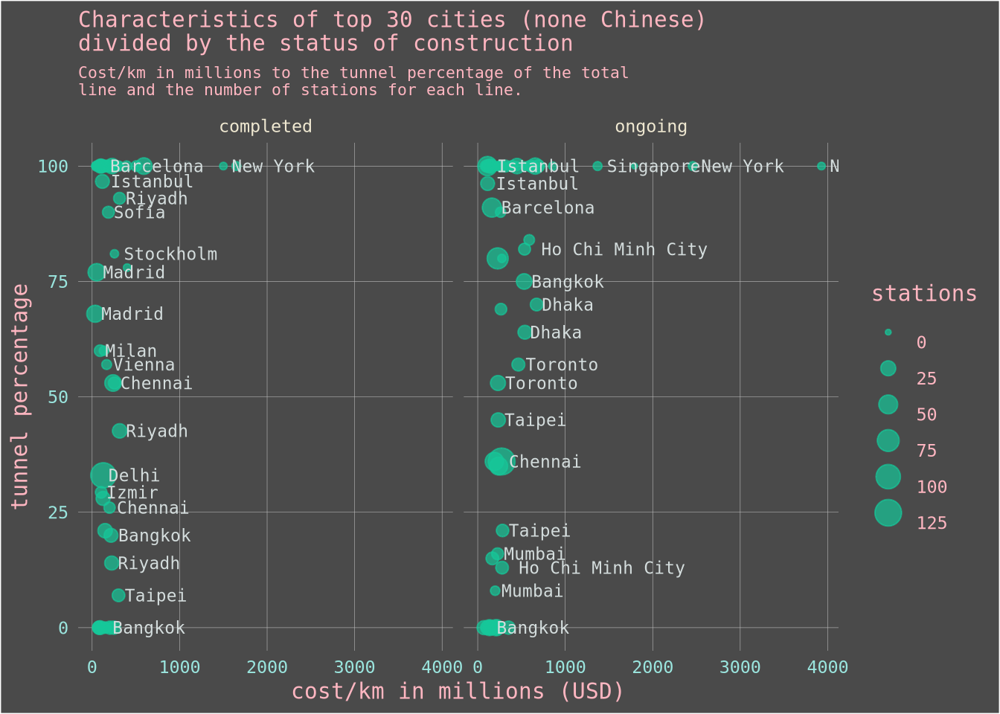

Getting to the juice
We augmented and improved in a tidy way the data in hand, Now what? (or rather : WAT?)
Well, David Robinson, who is one of the maintainers of the tidyverse, hosts a screen cast every week where he plays with the TidyTuesday data, and I noticed that he asks more questions than he actually answers, since I haven’t really developed a way by which I approach data, I will be your David Robinson, and ask the questions for you. Though I might not answer them since I will probably focus on getting the code right. With the this spirit let’s investigate the data, here’s my take :
What is the average cost/km per country?
transit_cost %>%
group_by(country) %>%
summarise(mean_cost_km = mean(cost_km_millions)) %>%
mutate(country = fct_reorder(country, mean_cost_km)) %>% # we add this
ggplot(aes(x = mean_cost_km,
y = country)) +
geom_col(fill = "skyblue") +
geom_vline(aes(xintercept = transit_cost$cost_km_millions %>% mean), color = "lightpink") +
ma_theme +
labs(title = "Mean cost/km for each country",
x = "mean of cost/km (in millions US$)")## `summarise()` ungrouping output (override with `.groups` argument)transit_cost %>%
group_by(country) %>%
summarise(mean_cost_km = mean(cost_km_millions)) %>%
mutate(status_int_mean = if_else(mean_cost_km > transit_cost$cost_km_millions %>% mean, "above_cost_mean_km", "below_cost_mean_km")) %>%
mutate(country = fct_reorder(country, mean_cost_km)) %>% # we add this
ggplot(aes(x = mean_cost_km,
y = country)) +
geom_col(fill = "skyblue") +
facet_wrap(~ status_int_mean, scales = "free_y") +
ma_theme +
labs(title = "Mean cost/km for each country",
subtitle = "Dividing countries above and below the international mean of cost/km.",
x = "mean of cost/km (in millions US$)")## `summarise()` ungrouping output (override with `.groups` argument)
What characteristics does the top most expensive lines have?
transit_cost %>%
mutate(status_int_mean = if_else(cost_km_millions > transit_cost$cost_km_millions %>% mean(), "above_cost_mean_km", "below_cost_mean_km")) %>%
mutate(line_status = if_else(end_year <= 2020, "completed", "ongoing")) %>%
mutate(period = end_year - start_year) %>%
ggplot() +
geom_point(aes(x = period,
y = length, color = line_status)) +
facet_grid(~ status_int_mean) +
ma_theme +
theme(legend.key = element_rect(fill = "#4a4a4a")) What about the cities, and their lines
transit_cost %>%
mutate(city = fct_reorder(city, number_lines)) %>%
mutate(city = fct_lump(city, 30)) %>%
filter(city != "Other") %>%
ggplot() +
geom_col(aes(x = number_lines,
y = city),
fill = "skyblue") +
ma_theme +
labs(title = "Cities with the most lines",
x = "number of lines")What if we consider Chinese cities as outliers and remove them from this plot, would we find an interesting idea?
transit_cost %>%
mutate(is_china = if_else(country == "China", "China", "not China")) %>%
mutate(city = fct_reorder(city, number_lines)) %>%
mutate(city = fct_lump(city, 40)) %>%
filter(city != "Other") %>%
ggplot() +
geom_col(aes(x = number_lines,
y = city,
fill = is_china)) +
ma_theme +
labs(title = "Cities(none Chinese, and Chinese) with the most lines",
x = "number of lines") +
guides(fill = guide_legend("Which city is Chinese?"))Yeah, we can see much better the number of transit lines for each city.
So what about the cost anyway?
transit_cost %>%
group_by(city) %>%
mutate(mean_city_cost = mean(cost_km_millions)) %>%
ungroup() %>%
filter(country != "China") %>%
mutate(city = fct_reorder(city, number_lines)) %>%
mutate(city = fct_lump(city, 50)) %>%
filter(city != "Other") %>%
ggplot() +
geom_col(aes(x = number_lines,
y = city,
fill = mean_city_cost)) +
scale_fill_viridis_c() +
ma_themeNew York lines, appear to be the most expensive in this data. What about Chinese cities?
transit_cost %>%
filter(country == "China") %>%
group_by(city) %>%
mutate(mean_city_cost = mean(cost_km_millions)) %>%
ungroup() %>%
mutate(city = fct_reorder(city, number_lines)) %>%
ggplot() +
geom_col(aes(x = number_lines,
y = city,
fill = mean_city_cost)) +
scale_fill_viridis_c() +
ma_themeWell, this is not even close to the 2 Billion dollars cost per Kilometer in New York, as the most expensive Chinese transit costs a little above 200 Million dollars for the Shenzhen and Tianjin Cities. We should take these insights with a grain of salt anyway because we didn’t take the inflation of the currency into account.
On another note, these transit systems can be undergrounds sometimes, would that affect the cost of lines?
a <- transit_cost %>%
filter(country != "China") %>%
mutate(line_status = if_else(end_year <= 2020, "completed", "ongoing")) %>%
mutate(city = fct_lump(city, 30)) %>%
mutate(city = fct_reorder(city, cost_km_millions)) %>%
filter(city != "Other") %>%
ggplot() +
geom_point(aes(y = cost_km_millions,
x = tunnel_per,
size = stations),
color = "#16c79a",
alpha = 0.7) +
geom_text(aes(y = cost_km_millions,
x = tunnel_per,
label = city),
check_overlap = TRUE,
hjust = -0.1,
nudge_x = 0.05,
color = "#d4dddd",
family = "DejaVu Sans Mono",
size = 3) +
scale_color_viridis_c() +
coord_flip() +
facet_wrap(~ line_status) +
labs(title = "Characteristics of top 30 cities (none Chinese)\ndivided by the status of construction",
subtitle = "Cost/km in millions to the tunnel percentage of the total\nline and the number of stations for each line.",
y = "cost/km in millions (USD)",
x = "tunnel percentage") +
ma_theme +
theme(legend.key = element_rect(fill = "#4a4a4a"))
a 
The relationship isn’t as clear as I initially intended to show in this plot. Note that I have removed the overlapping city names from the plot, that’s why not all of them is present there.
What about Chinese infrastructure?
b <- transit_cost %>%
filter(country == "China") %>%
mutate(line_status = if_else(end_year <= 2020, "completed", "ongoing")) %>%
mutate(city = fct_lump(city, 30)) %>%
mutate(city = fct_reorder(city, cost_km_millions)) %>%
filter(city != "Other") %>%
ggplot() +
geom_point(aes(y = cost_km_millions,
x = tunnel_per,
size = stations),
color = "#16c79a",
alpha = 0.7) +
geom_text(aes(y = cost_km_millions,
x = tunnel_per,
label = city),
check_overlap = TRUE,
hjust = -0.1,
nudge_x = 0.05,
color = "#d4dddd",
family = "DejaVu Sans Mono",
size = 3) +
scale_color_viridis_c() +
coord_flip() +
facet_wrap(~ line_status) +
labs(title = "Characteristics of top 30 cities (only Chinese)\ndivided by the status of construction",
subtitle = "Cost/km in millions to the tunnel percentage of the total\nline and the number of stations for each line.",
y = "cost/km in millions (USD)",
x = "tunnel percentage",
caption = "github : @bennour007 | twitter : @bennour007sin") +
ma_theme +
theme(legend.key = element_rect(fill = "#4a4a4a"))
bI think this would be very interesting if we plot it in a map. Let’s map it off, first we need to obtain the world map, where we can filter it for the Chinese territories, and then extract the spatial coordinates of each chinese city in order to plot them off.
world <- ne_countries(scale = "medium" , returnclass = "sf")
country_names <- transit_cost$country %>% unique()
city_names <- transit_cost$city %>% unique()c <- world.cities %>%
as_tibble() %>%
mutate(name = str_remove(name, "'")) %>%
filter(country.etc %in% country_names) %>%
filter(name %in% city_names) %>%
right_join(transit_cost, by = c("name" = "city")) %>%
select(- country.etc) %>%
filter(country == "China") %>%
ggplot() +
geom_sf(data = world %>% filter(name == "China"),
fill= "#bdc3c7",
color = "#bdc3c7") +
geom_point(aes(x = long,
y = lat,
size = cost_km_millions),
alpha = 0.7,
color = "#16c79a") +
geom_text(aes(x = long,
y = lat,
label = name),
check_overlap = TRUE,
hjust = -0.1,
nudge_x = 0.05,
color = "#efe8d1",
family = "DejaVu Sans Mono",
size = 3) +
ma_theme +
theme(panel.grid = element_blank(),
axis.text = element_blank(),
axis.title = element_blank(),
legend.key = element_rect(fill = "#4a4a4a"),
axis.ticks = element_blank(),
panel.background = element_rect(fill = "#4a4a4a")) +
guides(size = guide_legend("cost/km")) +
labs(title = "Chinese cities' infrastructure",
subtitle = "Costs per kilometer given for each line",
caption = "github : @bennour007 | twitter : @bennour007sin")
c## Warning: Removed 2 rows containing missing values (geom_point).## Warning: Removed 2 rows containing missing values (geom_text).There you go folks, that’s all I got.